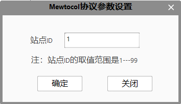

工程中使用的通信端口（串口、网口），通过功能区-设置里的通信管理，进行参数设置及管理。
端口列表： 显示端口名称，名称默认为Port+N；
端口通用参数
端口类型：RS232（串口）、Ethernet（网口）和MXComponent；
厂商：根据实际情况，选择对应的厂商类型；此处的厂商只是一个筛选功能，不会对具体的协议内容产生变化。可选择的有Keyence（基恩士）、Panasonic（松下）、Omron（欧姆龙）、OPT(奥普特)、嘉利、Linhou、Mitsubishi（三菱）、Schneider Electric（施耐德）。
协议：根据实际需要，选择对应的协议类型；
状态：未连接、已连接；
串口参数
端口：选择当前识别到的端口；
波特率：通信速度的单位是bps，表示1秒内可发送多少位的数据。停止位、奇偶校验位数据全部以该传输速度为基准来确定数据的长度。例如设置9600bps时，1秒内可通信约1000个英文数字字符。
数据位：表示1字符位串的长度。RS232通信中以7位或者8位为1单位发送字符。通常8位的情况较多。
校验位：奇偶校验位是为了检查是否正常地发送了数据而附加的位。奇偶校验位中可选择偶数奇偶校验、奇数奇偶校验，还可不附带奇偶校验位。可通过奇偶校验位进行调整，使要发送的数据之一变为偶数或者奇数。n：不进行校验，o：偶数奇偶校验位，e：奇数奇偶校验位。
停止位：1字符的前后一定会附带有表示最初和最后的名为开始位和停止位的信息。接收方以开始位为线索，识别1字符的起始部分，并正常地进行接收。另外，最后部分可通过附带停止位来通知数据的结束。开始位为1位，但是停止位有时是1位，有时是2位。
流量控制：当接收端数据处理不过来时,就发出“不再接收”的信号,发送端就停止发送,直到收到“可以继续发送”的信号再发送数据。
通信终止符：为了避免发送的一条指令被接收方分多次接收时而产生的指令错误问题，通信双方约定好以通信终止符来表示一条指令的结束，即通信指令结束的标识符。
网口参数
类型：分为“服务端”和“客户端”两种类型；
IP：设置通信IP地址。如果网络类型为“服务端”，则IP为本地地址；如果网络类型位“客户端”，则IP地址需要与服务端IP地址保持一致；
通信端口：端口值要求为正整数，为防止端口被占用，一般将其设置成较大的值，如2000。如果网络类型为“服务端”，则端口设置成较大的正整数；如果网络类型为“客户端”，则端口设置需要与服务端端口保持一致；
监听数量：作为服务端时，可支持多个客户端连接；
通信终止符：通信指令结束的标识符；
UDP参数
本机IP：本地IP地址，此IP是和PLC通信的网口的IP地址。也可以配置为127.0.0.1，系统会自动去进行匹配。
本机端口：本地的端口号，一般设定大于1024。
目标IP：PLC设备IP地址。
目标端口：PLC设备通信使用的端口号。
通信中止符：通信指令结束的标识符。
ADS参数
MXComponent参数
MXComponent是三菱组件通信，通过在三菱组件端配置通信模块，实现通信。
逻辑站点：通信端口ID，在三菱组件端进行配置；
ProfiNet参数
ProfiNet通信需要特殊的硬件支持，目前只支持CIFX 50-RE板卡,即工控机上只有集成了CIFX 50-RE板卡才能正常进行ProfiNet通信。
Board：默认cifX0,对于CIFX 50-RE板卡不需要更改之所以开放是为了以后有可能集成同一家硬件厂商的不同型号板卡。
Channel：默认为0,对于CIFX 50-RE板卡不需要更改。
AreaNum：默认为0,对于CIFX 50-RE板卡不需要更改。
操作按钮
新建：新建一个端口；
删除：删除选中的端口；
确定：保存当前设置，并退出通信管理；
关闭/×：取消当前操作，并退出通信管理。
其他参数
针对每个协议有一些特殊的参数设置。这些协议有RS232端口类型中的无协议（No-protocol）、Ethernet端口类型下的无协议（No-protocol）、Mewtocol、ModbusTCP。
无协议参数设置
发送前清空接收缓冲区：在发送工具发送数据前，把接收缓冲区中的数据清空。
拆解方式选择：由于无协议可以发送/接收任意长度的数据，因此为了方便区分出不同的数据包、需要进行数据包的识别以及拆分。拆分方式有终止符拆分以及固定长度拆分。
终止符拆分：通过识别通信管理界面中设置的通信终止符，进行数据包的识别与拆分。
固定长度拆分：根据设置的“一次拆解的数据长度”中的数据进行定长的数据包识别与拆分。
Mewtocol参数设置
Mewtocol协议中，为了区分总线上的多个设备，有了站点ID这一参数。该参数的设置范围是1—99

ModbusTCP参数设置
ModbusTCP协议中，为了区分总线上的多个设备，有了设备ID这一参数。
机架：通信PLC的设备CPU所在的编号(0-100,默认值0)
插槽：CPU模块的编号(0-100,默认值2)
| 协议 | PLC厂商 | 软件封装协议 | 支持的数据区域 | 数据类型 | 备注 |
|---|---|---|---|---|---|
| MX Component | 三菱 | MxComponent | M、D、X、Y | bool、short、int、long、float、double |
D、X、Y、只支持单个地址读写 |
| FINSTCP | 欧姆龙 | HostlinkFINS_TCP | DM、DM_Bit、CIO、CIO_Bit、 WR、WR_Bit、HR、HR_Bit、DR、IR |
bool、short、unsigned short、int、unsigned int、long、unsigned long、float、double、string |
无 |
| FINSUDP | 欧姆龙 | HostlinkFINS_UDP | DM、DM_Bit、CIO、CIO_Bit、 WR、WR_Bit、HR、HR_Bit、DR、IR |
bool、short、unsigned short、int、unsigned int、long、unsigned long、float、double、string |
无 |
| KeyenceSWLU | 基恩士 | KeyenceSWLU | DM、EM、W、TM、CM、VM、 R、B、MR、LR、CR、VB |
bool、short、int、long、float、double、unsigned short、 unsigned int、unsigned long、string |
此协议为上位链路通讯协议 |
| ModbusTCP | 施耐德 | ModbusTCP | 保持寄存器(4x)、线圈 | bool、short、int、long、float、double、string |
暂不支持离散输入、输入寄存器；string数据类型只对寄存器有效， 对离散输入、线圈无效 |
| ModbusRTU | 施耐德 | ModbusRTU | 保持寄存器(4x) | bool、short、int、long、float、double |
暂不支持线圈、离散输入、输入寄存器 |
| ModbusASCII | 施耐德 | ModbusASCII | 保持寄存器(4x) | bool、short、int、long、float、double |
暂不支持线圈、离散输入、输入寄存器 |
| MEWTOCOL | 松下 | Mewtocol | N/A | bool、short、int、long、float、double |
无 |
| ADS | 倍福 | ADS | N/A | bool、short、int、long、float、double |
无 |
| S7Comm | 西门子 | S7Comm | I、M、Q、DB | bool、short、int、long、float、double、unsigned short、unsigned int、unsigned long、string | string类型使用时地址向后偏移2个字节 |
| ProfiNet | HILSCHER | ProfiNet | I、Q | bool、char、short、int、long、double、float、unsigned short、unsigned int、unsigned long、string | 对于视觉来说，I区只写，Q区只读， 此通信需要特殊的硬件支持，目前只支持CIFX 50-RE板卡 |